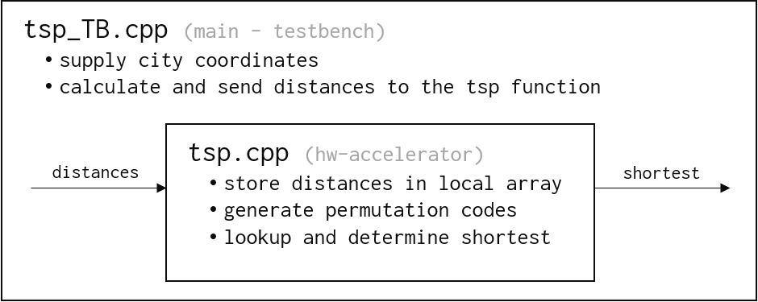

Vitis Hardware AccelerationSee Vitis™ Development Environment on xilinx.com |
In this section…
We describe the full design structure (testbench and accelerated function) and discuss the compiler hints (pragmas) applied.
Design Structure¶
The example design is structured as follows:
The hardware accelerated top function
tsphas two formal parameters: the input distances and the output result for the shortest distance found. The testbench (main) wraps around the function and sends distance data points and collects the result.
Here is the diagram:
The
tspfunction and its formal parameters (and the customization to AXI-Stream):void tsp(hls::stream<uint16_t>& streamDistances, unsigned int& shortestDistance) { // defines our input as coming from an AXI-Stream via the INTERFACE pragma #pragma HLS INTERFACE axis port=streamDistances
Conceptually, this accelerated function
tspreceives a series of distances from a given city to all others. The number of data points sent through the stream is N (the number of cities) times N. Notice that the input is declared as a Vitis HLS stream from thehls::streambuilt-in library and further specialized to AXI-Stream via theINTERFACEpragma.The data sent by the testbench over the stream is of type unsigned int (
uint16_t), the testbench normalizes the floating point distances to this hardware efficient data type:// Normalizing distances to get the maximum precision on 16-bit integers uint16_t maxUint = std::numeric_limits<uint16_t>::max(); for ( int i = 0; i < N*N; ++i ) { cout << "Distance (fp32): " << distances[i] << " Norm. (uint16): " << (uint16_t)((distances[i]/maxDist) * maxUint); inputDistances.write((distances[i]/maxDist) * maxUint); }
The distances are then stored into an internal array which is small enough to be implemented as memory elements onto the device logic elements rather than dedicated (and larger) memory blocks. Indeed, if we consider 13 cities, it corresponds to 13x13=169 distances represented as 16-bit words which amounts to 2,704 bits which is much less of what a single of the device dedicated block memory (36k-bits for the BRAM) can hold.
Lookups performed with on-chip memory are fast and we’ll use this at our advantage in a later step of the tutorial to further improve the performance.
Generating all the different permutations in an eficient manner is critical since, depending on the number of cities, we may need millions or billions of different routes lookups that we cannot pre-compute and store storeas there are just too many. We need to create these route permutations “on-the-fly”. Wait! Isn’t that what the C++
next_permutation()function gives us?… Yes, but that function is inherently difficult to parallelize given that one permutation calculation depends on the previous one. In our example we use a different method based on factoradics:
We use the loop index and convert it in factorial base. Then we use a property of factorial representation to deduce an inversion vector which is encoded as a permutation.More information here: https://stackoverflow.com/a/7919887/11316188
and here https://en.wikipedia.org/wiki/Factorial_number_system// Represent "i" in factorial base for (int k = 0; k < N; ++k) { perm[k] = i / factorial(N - 1 - k); i = i % factorial(N - 1 - k); } // Transform the factorial representation into an inversion vector for (char k = N - 1; k > 0; --k) for (char j = k - 1; j >= 0; --j) perm[k] += (perm[j] <= perm[k]); // This is perm[] for N=4 across all 3!=6 iterations: // 0 | 1 | 2 | 3 // 0 | 1 | 3 | 2 // 0 | 2 | 1 | 3 // 0 | 2 | 3 | 1 // 0 | 3 | 1 | 2 // 0 | 3 | 2 | 1
The code above generates a lexicographic list of permutations.
For example with N=5, the iteration number 17 is represented as 02210 in factorial base: 0x24, 2x6, 2x2, 1x1 and 0.
To calculate the permutation:Take the 0 (02210) and look at digits on its left. Only the leftmost digit is smaller or equal, so this gives us 0+1=1.
Now take 1 (02210) and look left, it’s bigger or equal only to the last 0 again, so 1+1=2
Now take the next 2 on the left (02210), it’s bigger or equal than its two neighbors on the left, so 2+1+1=4
Now take the second 2 on the left ((02210)) and that gives 2+1=3
The permutation for iteration 17 which is the 18th sequence is 0,3,4,2,1
The leading 0 is always present since the loop runs on (N-1)! and not N! and that 0 becomes the reference city, the starting point to calculate the route
Next, we lookup the route with the permutation from the
distancesarray which as explained is rather small and mapped onto on-chip RAM. The full route calculation is done through thegetDistancefunction:template<typename T> unsigned int getDistance(const T perm[N], const uint16_t distances[N][N]) { #pragma HLS INLINE unsigned int ret = 0; for(int i = 0; i < N-1; ++i) ret += distances[perm[i]][perm[i+1]]; return ret; }
The value of
getDistanceis whatcomputereturns and each iteration updates the shortest thus far:loop_compute: for( unsigned long int i_ = 0; i_ < factorialN; i_ += 1 ) { #pragma HLS pipeline II=1 candidate = std::min(candidate, compute(i_, distances)); }
Lastly, the
shortestDistance(the output of ourtspaccelerator) provides the smallest value found:// Last candidate from loop above holds the shortest distance shortestDistance = candidate;
The waveform view below shows the timeline for four cities (N=4), the input stream of 16 distances is shown on row #6 while the result comes on row #11 with its valid mask one row above (row #10):